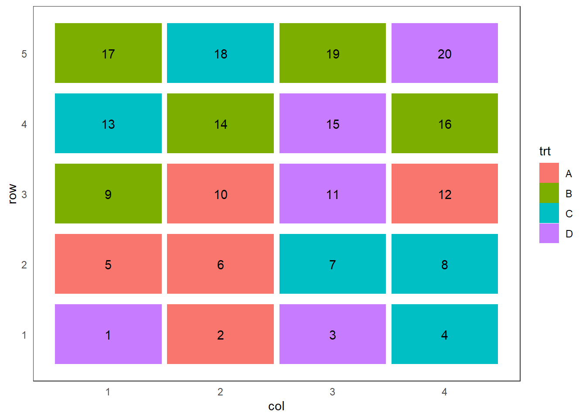
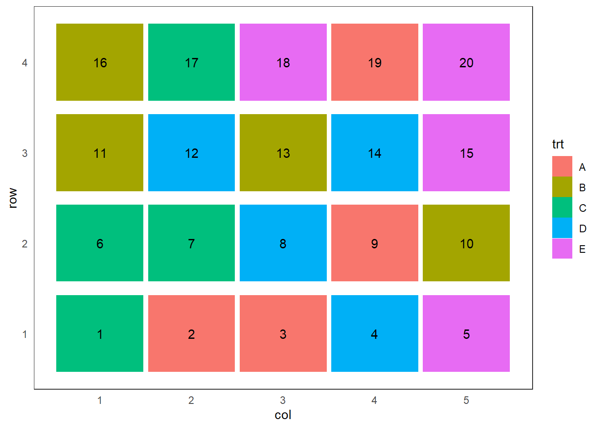

Delineamento Inteiramente Casualizado
Fundamentos
O delineamento inteiramente casualizado (DIC) é o mais simples dos delineamentos, pois considera apenas dois dos princípios básicos da experimentação: a repetição e a casualização. Neste, os tratamentos são aleatoriamente atribuídos ao material experimental, sem o esforço de se restringir os tratamentos a alguma porção de área, material ou espaço. Ainda como característica, como não há uso do controle local o número de repetições por tratamento pode variar.É geralmente utilizado quando a variação do material experimental é relativamente pequena, o que geralmente ocorre em laboratórios e casas de vegetação.
Como vantagens de sua utilização temos que é um experimento de fácil planejamento e que permite o número máximo de graus de liberdade do Resíduo. Em termos de análise é a mais simples quando comparado aos demais delineamentos experimentais e não apresentará confundimento caso os tratamentos tenham números diferentes de repetições. Entretanto, como desvantagens temos que o delineamento inteiramente casualizado é adequado aos experimentos com baixo número de tratamentos e material experimental homogêneo, o que nem sempre se consegue. Quando um grande número de tratamentos é utilizado, há um crescimento no material experimental, que pode inflacionar a variação experimental. Nesses casos o Delineamento Inteiramente Casualizado não é indicado.
Obtendo um croqui para um DIC
Para obtermos um croqui para um experimento com \(I\) tratamentos em um DIC, sendo o \(i\)-ésimo tratamento repetido \(n_i\) vezes e o número total de parcelas \(n=\sum_{i=1}^I n_i\)
- Enumerar as parcelas 1, 2, . . . , \(n\)
- Criar o delineamento sistemático, ou seja, alocar o tratamento 1 às parcelas 1, 2, . . . , \(n_1\) alocar o tratamento 2 às parcelas \(n_1\) + 1, \(n_1\) + 2, . . . , \(n_1\) + \(n_2\) e assim até as repetições do tratamento \(I\).
- Escolha uma permutação de 1, 2, . . . , \(n\) e aplique ao delineamento.
Exemplo
Suponha que desejamos comparar a produtividade de três variedades de soja, com três, quatro e três repetições respectivamente. O plano de casualização para o delineamento sistemático é dado por:
| Ordem Padrão | 1 | 2 | 3 | 4 | 5 | 6 | 7 | 8 | 9 | 10 |
|---|---|---|---|---|---|---|---|---|---|---|
| Variedade | A | A | A | B | B | B | B | C | C | C |
Uma permutação:
| Parcelas | 7 | 1 | 8 | 10 | 3 | 2 | 4 | 6 | 9 | 5 |
|---|---|---|---|---|---|---|---|---|---|---|
| Ordem Padrão | 1 | 2 | 3 | 4 | 5 | 6 | 7 | 8 | 9 | 10 |
E o plano de casualização é dado por:
| Parcela | 1 | 2 | 3 | 4 | 5 | 6 | 7 | 8 | 9 | 10 |
|---|---|---|---|---|---|---|---|---|---|---|
| Variedade | B | A | C | C | A | A | B | B | C | A |
Análise dos dados
Entende-se como objetivo inicial de um experimento a verificação dos efeitos de tratamentos. Aqui será utilizada a Análise de Variância (ANOVA) para tal verificação. A ANOVA é utilizada na comparação de médias de dois ou mais tratamentos ou teste para a variância dos tratamentos, por meio do teste F (Fisher). Trata-se de uma extensão do teste t de Student, permitindo que o pesquisador compare qualquer número de médias, quando o efeito de tratamentos é fixo.
Modelo estatistico
O modelo estatístico para a análise dos dados oriundos de um DIC com um único fator de tratamentos é dado pela Equação 2.
\[\begin{equation} y_{ij} = \mu + \tau_i + e_{ij} = \mu_i + e_{ij} \end{equation}\]
em que:
\(y_{ij}\) é o valor observado na j-ésima repetição do iésimo tratamento, com:
- \(i = 1, ... , I\) e
- \(j = 1, ... , n_i\)
\(\mu\) é uma constante inerente a todas as observações, geralmente a média geral,
\(\tau_i\) é o efeito do iésimo tratamento,
\(e_{ij}\) é o erro experimental, tal que \(e_{ij} \overset{iid}{\sim} N(0,\sigma^2)\).
Realizando-se a ANOVA, testamos as hipóteses:
\(H_0 : \tau_{1} = \tau_{2} = ... = \tau_{I} = 0\)
\(H_1 = H_a\) : \(\tau_{i} \neq 0\) para algum \(i\).
Havendo uma reparametrização do modelo apresentado na equação 1, tal que \(\mu + \tau_i = \alpha_i\) em que \(\alpha_i\) é a média do iésimo tratamento, é:
\[y_{ij} = \alpha_i + e_{ij} \text(3)\]
As hipóteses de interesse passam a ser:
\(H_0 : \alpha_1 = \alpha_2 = ... = \alpha_I = \mu\)
\(H_1 = Ha\): pelo um contraste de médias difere de zero.
Neste momento assumiremos que as pressuposições de normalidade e independência dos erros, bem a homogeneidade de suas variâncias garantidas. Assim, assumimos que eij corresponde a uma realização da variável \(E_{ij}\) , tal que \(e_{ij} \overset{iid}{\sim} N(0,\sigma^2)\) e os demais termos no modelo 1 são fixos. Cabe sailentar que o modelo citado é o modelo maximal, ou seja, aquele modelo mais complicado a ser considerado na análise. Desse modo, a esperança da variável aleatória \(Y_{ij}\) será
\[E(Y_{ij}) = E(\mu + \tau_i + E_{ij} ) = \mu + \tau_i + 0 = \mu + \tau_i (4)\]
Análise de variância
A proposta da ANOVA consiste em decompor a variância total dos dados em parte atribuída aos efeitos de tratamentos e parte ao acaso.
Tabela 1: Demonstração sobre fontes de variação e graus de liberdade
| Fontes de Variação | graus de liberdade |
|---|---|
| Total | \(n\text{-}1\) |
| Tratamentos | \(I\text{-}1\) |
| Resíduo | \(n\text{-}I\) |
Sabemos que a variância dos dados é dada por:
\[\text{Variância} = \sum _{ij} \frac{(yij−\bar{y})^2}{(n−1)} (\text{expressão 1})\]
\[\text{variância} = \displaystyle{\frac{\text{SQ}}{\text{gl}}}(\text{expressão 2})\]
\[\text{QM}_{\text{Resíduo}} = \displaystyle{\frac{\text{SQ}_\text{Resíduo}}{\text{gl}_\text{Resíduo}}}\]
\[\text{F} = \displaystyle{\frac{\text{QM}_{\text{Trat}}}{\text{QM}_{\text{Resíduo}}}}\] Retomando as hipóteses:
\(H_0 : \mu_1 = \mu_2 = ... = \mu_I = 0\)
\(H_1 = Ha\): pelo um contraste de médias difere de zero.Denotamos por Soma de Quadrados do Total (SQ Total) o numerador da expressão 2. Observe que a decomposição mencionada anteriormente será:
\[\displaystyle{\sum_{i=1}^I\sum_{j=1}^Jy_{ij}^2\text-\frac{\left(\sum_{i=1}^I\sum_{j=1}^Jy_{ij}\right)^2}{I\times J}}(\text{expressão 3})\]
em que SQ Tratamentos e SQ Resíduo correspondem às Soma de Quadrados de Tratamentos e Soma de Quadrados de Resíduo, respectivamente. As expressões apresentadas em 4 e 5, podem ser reescritas conforme segue.
\[\displaystyle{\frac{1}{J}\sum_{i=1}^I T_i^2 \text- \frac{\left(\sum_{i=1}^I\sum_{j=1}^Jy_{ij}\right)^2}{I\times J}}(\text{expressão 4})\]
A SQ Resíduo (6) pode ser obtida por diferença, ou seja, SQ Resíduo = SQ Total - SQ Tratamentos.
Para encontrarmos a estatística apropriada para o teste F temos que obter as Esperanças dos Quadrados Médios relacionados a cada fonte de variação na ANOVA. Os quadrados médios, denotados usualmente por QM, são definidos pelo quociente entre a soma de quadrados e o respectivo número de graus de liberdade relacionados a uma fonte de varição, isto é:
\[\text{QM}_{\text{Trat}} = \displaystyle{\frac{\text{SQ}_\text{Trat}}{\text{gl}_\text{Trat}}}\]
Rejeita-se \(H_0\) se \(F_{cal} \geq F_{tab_{(\alpha, I-1, I(J-1))}}\), em que \(\alpha\) é o nível de significância, \(I-1\) é o número de graus de liberdade do numerador e \(I(J-1)\) é o número de graus de liberdade do denominador.
F
Coeficiente de variação
número de repetições pode estar associado ao número de graus de liberdade do resíduo ; \[\text{gl}_{\text{Res}} \geq 12\]
O CV é adimensional, pode-se comparar a dispersão de variáveis com diferentes unidades de medida.
\[\displaystyle{\text{CV}_{\%} = 100\frac{\hat{\sigma}}{\hat{\mu}} = 100\frac{\sqrt{\text{QM}_{\text{Res}}}}{\bar{y}}}\]
CV \(<\) 10% : baixo
10% \(<\) CV \(>\) 20% :médio
20% \(<\) CV \(>\) 30% :alto
CV \(>\) 30% : muito alto
Exemplo
Considere os dados abaixo referentes à produtividade de milho (kg/100m\(^2\)) de quatro diferentes variedades, em um experimento instalado segundo o delineamento inteiramente casualizado, com cinco repetições.
Tabela 2: produtividade de milho (kg/100m\(^2\)) de quatro diferentes variedades
| (Variedades) | 1 | 2 | 3 | 4 | 5 | total | média |
|---|---|---|---|---|---|---|---|
| \(A\) | 25 | 26 | 20 | 23 | 21 | 115 | 23,00 |
| \(B\) | 31 | 25 | 28 | 27 | 24 | 135 | 27,00 |
| \(C\) | 22 | 26 | 28 | 25 | 29 | 130 | 26,00 |
| \(D\) | 33 | 29 | 31 | 34 | 28 | 155 | 31,00 |
Tabela 3: nomenclatura de dados
| (Variedades) | 1 | 2 | 3 | 4 | 5 | total |
|---|---|---|---|---|---|---|
| V1 | y11 | y12 | y13 | y14 | y15 | y1· = T1 |
| V2 | y21 | y22 | y23 | y24 | y25 | y2· = T2 |
| V3 | y31 | y32 | y33 | y34 | y35 | y3· = T3 |
| V4 | y41 | y42 | y43 | y44 | y45 | y4· = T4 |
Análise descritiva:
Tabela 4: Análise descritivas dos dados
| Análise | A | B | C | D |
|---|---|---|---|---|
| Soma | 115,00 | 135,00 | 130,00 | 155,00 |
| Média | 23,00 | 27,00 | 26,00 | 31,00 |
| Variância | 6,50 | 7,50 | 7,50 | 6,50 |
| Desvio-padrão | 2,55 | 2,74 | 2,74 | 2,55 |
Soma de Quadrados total
\[\text{SQ}_{\text{Total}} = \displaystyle{\sum_{i=1}^4\sum_{j=1}^5y_{ij}^2 \text{-} \frac{\left(\sum_{i=1}^4\sum_{j=1}^5y_{ij}\right)^2}{4\times5}}\]
\[ = \displaystyle{25^2 + 26^2 + \ldots + 28^2 \text{-} \frac{535^2}{20}} = 275,75\]
Soma de Quadrados de tratamentos
\[\text{SQ}_{\text{Trat}} = \displaystyle{\frac{1}{5}\sum_{i=1}^4 T_i^2 \text{-} \frac{\left(\sum_{i=1}^4\sum_{j=1}^5y_{ij}\right)^2}{4\times5}}\]
\[= \displaystyle{\frac{1}{5}\left(115^2 + 135^2 + 130^2 + 155^2\right) - \frac{535^2}{20}}= 163,75\]
Soma de Quadrados do Resíduo
\[\text{SQ}_\text{Resíduo} = \text{SQ}_{\text{Total}} \text{-} \text{SQ}_{\text{Trat}}\] \[= 275,75 - 163,75 = 112,00\]
Quadrado médio tratamentos
\[\text{QM}_{\text{Trat}} = \displaystyle{\frac{\text{SQ}_{\text{Trat}}}{\text{gl}_{\text{Trat}}}} = \displaystyle{\frac{163,75}{3}} = 54,5833\]
Quadrado médio do resíduo
\[\text{QM}_{\text{Resíduo}} = \displaystyle{\frac{\text{SQ}_{\text{Resíduo}}}{\text{gl}_{\text{Resíduo}}}}=\displaystyle{\frac{112,00}{16}}= 7,0000\]
F calculado
\[\text{F} = \displaystyle{\frac{\text{QM}_{\text{Trat}}}{\text{QM}_{\text{Resíduo}}}}=\displaystyle{\frac{54,5833}{7,0000}}= 7,80\]
Tabela 5: ANOVA
| Fontes | Graus de liberdade | Soma de Quadrados | Quadrado Médio | Fcal | Ftab |
|---|---|---|---|---|---|
| Tratamentos | 3 | 163,75 | 54,5833 | 7,80 | |
| resıduo | 16 | 112,00 | 7,0000 | ||
| Total | 19 | 275,75 |
F tabelado:
> # Defina o nível de significância desejado (por exemplo, 0.05 para um nível de 5%)
> nivel_de_significancia <- 0.05
>
> # Defina os graus de liberdade do numerador (df1) e do denominador (df2)
> df1 <- 3 # Graus de liberdade do numerador
> df2 <- 16 # Graus de liberdade do denominador
>
> # Encontre o valor crítico da distribuição F para o nível de significância especificado
> valor_critico <- qf(1 - nivel_de_significancia, df1, df2)
>
> # Imprima o valor crítico
> cat("Valor crítico da distribuição F:", valor_critico, "\n")Valor crítico da distribuição F: 3,238872 Como \(\text{F} = 7. 80 > 3. 24 = \text{FTab}\) (\(\alpha = 0. 05, 3, 16\)), há evidências para rejeitarmos \(H_0\) ao nível de 5% de significância. Desse modo, não podemos afirmar que todas as médias são iguais.
Aplicação no R studio
Planejamento e Croqui
> #' # Planejamento de um experimento
> set.seed(1234)
> sample(rep(c("A", "B", "C", "D"), 5)) [1] "D" "C" "C" "C" "D" "D" "D" "D" "A" "C" "C" "B" "A" "B" "B" "B" "B" "A" "A"
[20] "A"> #' ## Usando a biblioteca agricolae
>
> # Instalando
> # install.packages("agricolae",
> # dependencies = TRUE)
> # Habilitando as funções
> library(agricolae)
> trt = LETTERS[1:4]
> delineamento <- design.crd(trt,
+ r = 5,
+ serie = 0)
> delineamento$parameters
$parameters$design
[1] "crd"
$parameters$trt
[1] "A" "B" "C" "D"
$parameters$r
[1] 5 5 5 5
$parameters$serie
[1] 0
$parameters$seed
[1] 1214835651
$parameters$kinds
[1] "Super-Duper"
$parameters[[7]]
[1] TRUE
$book
plots r trt
1 1 1 D
2 2 1 A
3 3 2 D
4 4 1 C
5 5 2 A
6 6 3 A
7 7 2 C
8 8 3 C
9 9 1 B
10 10 4 A
11 11 3 D
12 12 5 A
13 13 4 C
14 14 2 B
15 15 4 D
16 16 3 B
17 17 4 B
18 18 5 C
19 19 5 B
20 20 5 D> # Graficamente
>
> # install.packages("agricolaeplotr",
> # dependencies = TRUE)
> library(agricolaeplotr)
> plot_design_crd(delineamento,
+ ncols = 4,
+ nrows = 5)
> # Para montar um croqui precisamos de um gride, definido por linhas e colunas
> delineamento$book$Linha <- rep(1:5, each = 4)
> delineamento$book$Coluna <- rep(1:4, times = 5)
>
> delineamento$book plots r trt Linha Coluna
1 1 1 D 1 1
2 2 1 A 1 2
3 3 2 D 1 3
4 4 1 C 1 4
5 5 2 A 2 1
6 6 3 A 2 2
7 7 2 C 2 3
8 8 3 C 2 4
9 9 1 B 3 1
10 10 4 A 3 2
11 11 3 D 3 3
12 12 5 A 3 4
13 13 4 C 4 1
14 14 2 B 4 2
15 15 4 D 4 3
16 16 3 B 4 4
17 17 4 B 5 1
18 18 5 C 5 2
19 19 5 B 5 3
20 20 5 D 5 4Importando dados de excel .xlsx
> #Deve-se importar os arquivos .xlsx para o Rstudio
> library(readxl)
> dados1 <- read_xlsx("dados/aula2.2.xlsx")
>
> knitr::kable(dados1)| trat | y |
|---|---|
| A | 25 |
| A | 26 |
| A | 20 |
| A | 23 |
| A | 21 |
| B | 31 |
| B | 25 |
| B | 28 |
| B | 27 |
| B | 24 |
| C | 22 |
| C | 26 |
| C | 28 |
| C | 25 |
| C | 29 |
| D | 33 |
| D | 29 |
| D | 31 |
| D | 34 |
| D | 28 |
Análise descritiva dos dados
> library(ggplot2)
> ggplot(dados1,
+ aes(x = trat,
+ y = y)) +
+ geom_point() +
+ geom_point(stat = "summary",
+ fun = mean,
+ col = "red") +
+ annotate("point",
+ x = dados1$trat,
+ y = 26.75,
+ colour = "blue") +
+ xlab("tratamentos") +
+ ylab("produtividade")
> ggplot(dados1,
+ aes(x = trat,
+ y = y)) +
+ geom_boxplot()
> #' ## Estatísticas descritivas
> n <- with(dados1, tapply(y,trat, length))
> soma <- with(dados1, tapply(y,trat,sum))
> media <- with(dados1, tapply(y,trat,mean))
> variancia <- with(dados1, tapply(y,trat,var))
> desv.padr <- with(dados1, tapply(y,trat,sd))
> dist.int <- with(dados1, tapply(y,trat,IQR))> #' Criando uma função que calcula a amplitude
> f1 <- function(x) max(x)-min(x)
> amplitude <- with(dados1, tapply(y,trat,f1))
>
> resumo <- rbind(n, soma, media, variancia,
+ desv.padr, amplitude,dist.int)
> rownames(resumo) <- c("n", "Soma", "Média",
+ "Variância", "Desvio-padrão",
+ "Amplitude", "Amplitude Interquartílica")
> round(resumo,3) A B C D
n 5,00 5,000 5,000 5,00
Soma 115,00 135,000 130,000 155,00
Média 23,00 27,000 26,000 31,00
Variância 6,50 7,500 7,500 6,50
Desvio-padrão 2,55 2,739 2,739 2,55
Amplitude 6,00 7,000 7,000 6,00
Amplitude Interquartílica 4,00 3,000 3,000 4,00Análise da variância (ANOVA)
> #' ## Análise de variância
> #'
> #' $H_0$: $\mu_1 = \mu_2 = \mu_3 = \mu_4$ *versus*
> #' $H_1:$ Pelo menos duas médias de tratamentos diferem entre si.
> #'
> modelo <- aov(y ~ trat, dados1)
> anova(modelo)Analysis of Variance Table
Response: y
Df Sum Sq Mean Sq F value Pr(>F)
trat 3 163,75 54,583 7,7976 0,001976 **
Residuals 16 112,00 7,000
---
Signif. codes: 0 '***' 0,001 '**' 0,01 '*' 0,05 '.' 0,1 ' ' 1Exercicíos
- Os dados apresentados na Tabela 1 são referentes ao peso de espigas de milho, em kg/10m², em cada parcela (10 m²). São apresentados os dados de 5 genótipos avaliados em um delineamento inteiramente casualizado (DIC) com 4 repetições.
| Genótipos | I | II | III | IV |
|---|---|---|---|---|
| A | 5,95 | 6,21 | 5,40 | 5,18 |
| B | 5,07 | 6,71 | 5,46 | 4,98 |
| C | 4,82 | 5,11 | 4,68 | 4,52 |
| D | 3,87 | 4,16 | 4,11 | 4,84 |
| E | 5,53 | 5,82 | 4,29 | 4,70 |
Considere os dados apresentados na Tabela.
Faça um possível croqui de instalação para um novo experimento com o mesmo número de tratamentos (genótipos) e de repetições;
Faça a análise exploratória dos dados de peso de espigas;
Faça a análise de variância e interprete o resultado do teste F considerando o nível de significância 5%;
- Em um experimento de competição de dez cultivares de arroz para avaliar a produtividade, instalado em um delineamento inteiramente casualizado, os resultados (parciais) para a ANOVA foram os seguintes:
| Fonte | GL | SQ | QM | F Cal | F Tab |
|---|---|---|---|---|---|
| cultivar | x | 17564523 | x | 9.31 | 2.39 |
| Resíduo | x | x | x | x | x |
| Total | 29 | x | x | x | x |
Complete o quadro da ANOVA
Com base no resultado da ANOVA escreva as hipóteses e a conclusão
- Em um experimento realizado no detapartamento de zootecnia da Esalq foram encontras as seguintes concentrações de glicose no sangue ( mg/ 100ml ) de 5 raças de bovinos sendo 8 amostras por raça. Os resultados foram:
| Raças | 1 | 2 | 3 | 4 | 5 | 6 | 7 | 8 |
|---|---|---|---|---|---|---|---|---|
| Nelore | 124 | 111 | 117 | 110 | 142 | 116 | 121 | 142 |
| Gir | 101 | 98 | 121 | 117 | 106 | 118 | 108 | 123 |
| Girolando | 118 | 127 | 121 | 121 | 127 | 120 | 129 | 138 |
| Holandês | 125 | 129 | 148 | 119 | 139 | 110 | 122 | 141 |
| Senepol | 101 | 103 | 112 | 107 | 119 | 106 | 122 | 118 |
Faça uma análise descritiva dos dados.
Faça o quadro da ANOVA e responda qual hipótese seguir.
Como seria um possível planejamento para esse experimento?
Resolução dos exercícios
> library(agricolae)
> trt = LETTERS[1:5]
> delineamento1 <- design.crd(trt,
+ r = 4,
+ serie = 0)
> delineamento1$parameters
$parameters$design
[1] "crd"
$parameters$trt
[1] "A" "B" "C" "D" "E"
$parameters$r
[1] 4 4 4 4 4
$parameters$serie
[1] 0
$parameters$seed
[1] 1427631851
$parameters$kinds
[1] "Super-Duper"
$parameters[[7]]
[1] TRUE
$book
plots r trt
1 1 1 C
2 2 1 A
3 3 2 A
4 4 1 D
5 5 1 E
6 6 2 C
7 7 3 C
8 8 2 D
9 9 3 A
10 10 1 B
11 11 2 B
12 12 3 D
13 13 3 B
14 14 4 D
15 15 2 E
16 16 4 B
17 17 4 C
18 18 3 E
19 19 4 A
20 20 4 E> library(agricolaeplotr)
> plot_design_crd(delineamento1,
+ ncols = 5,
+ nrows = 4)
> # Para montar um croqui precisamos de um gride, definido por linhas e colunas
> delineamento1$book$Linha <- rep(1:4, each = 5)
> delineamento1$book$Coluna <- rep(1:5, times = 4)
>
> delineamento1$book plots r trt Linha Coluna
1 1 1 C 1 1
2 2 1 A 1 2
3 3 2 A 1 3
4 4 1 D 1 4
5 5 1 E 1 5
6 6 2 C 2 1
7 7 3 C 2 2
8 8 2 D 2 3
9 9 3 A 2 4
10 10 1 B 2 5
11 11 2 B 3 1
12 12 3 D 3 2
13 13 3 B 3 3
14 14 4 D 3 4
15 15 2 E 3 5
16 16 4 B 4 1
17 17 4 C 4 2
18 18 3 E 4 3
19 19 4 A 4 4
20 20 4 E 4 5> dadosmilho <- data.frame(
+ Genotipo = factor(rep(1:5,
+ each = 4)),
+ prodmilho = c(5.95, 6.21, 5.40, 5.18,
+ 5.07, 6.71, 5.46, 4.98,
+ 4.82, 5.11, 4.68, 4.52,
+ 3.87, 4.16, 4.11, 4.84,
+ 5.53, 5.82, 4.29, 4.70))> #' ## Estatísticas descritivas
> n1 <- with(dadosmilho, tapply(prodmilho, Genotipo, length))
> soma1 <- with(dadosmilho, tapply(prodmilho, Genotipo, sum))
> media1 <- with(dadosmilho, tapply(prodmilho, Genotipo, mean))
> variancia1 <- with(dadosmilho, tapply(prodmilho, Genotipo, var))
> desv.padr1 <- with(dadosmilho, tapply(prodmilho, Genotipo, sd))
> dist.int1 <- with(dadosmilho, tapply(prodmilho, Genotipo, IQR))> #' Criando uma função que calcula a amplitude
> f2 <- function(x) max(x)-min(x)
> amplitude1 <- with(dadosmilho, tapply(prodmilho,Genotipo, f2))
>
> resumo1 <- rbind(n1, soma1, media1, variancia1,
+ desv.padr1, amplitude1,dist.int1)
> rownames(resumo1) <- c("n", "Soma", "Média",
+ "Variância", "Desvio-padrão",
+ "Amplitude", "Amplitude Interquartílica")
> round(resumo1,3) 1 2 3 4 5
n 4,000 4,000 4,000 4,000 4,000
Soma 22,740 22,220 19,130 16,980 20,340
Média 5,685 5,555 4,782 4,245 5,085
Variância 0,227 0,636 0,063 0,173 0,506
Desvio-padrão 0,477 0,798 0,250 0,416 0,711
Amplitude 1,030 1,730 0,590 0,970 1,530
Amplitude Interquartílica 0,670 0,725 0,253 0,280 1,005> modelo1 <- aov(prodmilho ~ Genotipo, dadosmilho)
> anova(modelo1)Analysis of Variance Table
Response: prodmilho
Df Sum Sq Mean Sq F value Pr(>F)
Genotipo 4 5,5078 1,37695 4,2872 0,01644 *
Residuals 15 4,8177 0,32118
---
Signif. codes: 0 '***' 0,001 '**' 0,01 '*' 0,05 '.' 0,1 ' ' 1Como o P valor= 0,0164 é menor que 0.05, há evidências para rejeitarmos \(H_0\) ao nível de 5% de significância. Desse modo, não podemos afirmar que todas as médias são iguais.
| Fonte | GL | SQ | QM | F Cal | F Tab |
|---|---|---|---|---|---|
| cultivar | x | 17564523 | x | 9.31 | 2.39 |
| Resíduo | x | x | x | x | x |
| Total | 29 | x | x | x | x |
O estudo foi realizado com 10 cultivares, logo no número de graus de liberdade de tratamentos é 9. Com isso encontramos o número de graus de liberdade do resíduo que é o total menos tratamentos.
A partir da Soma de quadrados de tratamento e dos graus de liberdade dos tratamentos podemos encontrar o valor do quadrado médio de tratamentos.
A partir do quadrado medio de tratamentos e do F calculado podemos encontrar o quadrado médio do residuo e encontrar a soma de quadrados do resíduo.
| Fonte | GL | SQ | QM | F Cal | F Tab |
|---|---|---|---|---|---|
| cultivar | 9 | 17564523 | 1951613.66 | 9.31 | 2.39 |
| Resíduo | 20 | 4192510.56 | 209625.52 | ||
| Total | 29 | 21757033.5 |
- Como \(\text{F} = 9.31 > 2.39 = \text{FTab}\) (\(\alpha = 0. 05, 9, 20\)), há evidências para rejeitarmos \(H_0\) ao nível de 5% de significância. Desse modo, não podemos afirmar que todas as médias são iguais.
> dadosbovinos <- data.frame(
+ racas = factor(rep(1:5,
+ each = 8)),
+ sangue = c(124, 111, 117, 110, 142, 116, 121, 142,
+ 101, 98, 121, 117, 106, 118, 108, 123,
+ 118, 127, 121, 121, 127, 120, 129, 138,
+ 125, 129, 148, 119, 139, 110, 122, 141,
+ 101, 103, 112, 107, 119, 106, 122, 118
+ ))> #' ## Estatísticas descritivas
> n2 <- with(dadosbovinos, tapply(sangue, racas, length))
> soma2 <- with(dadosbovinos, tapply(sangue, racas, sum))
> media2 <- with(dadosbovinos, tapply(sangue, racas, mean))
> variancia2 <- with(dadosbovinos, tapply(sangue, racas, var))
> desv.padr2 <- with(dadosbovinos, tapply(sangue, racas, sd))
> dist.int2 <- with(dadosbovinos, tapply(sangue, racas, IQR))> #' Criando uma função que calcula a amplitude
> f3 <- function(x) max(x)-min(x)
> amplitude2 <- with(dadosbovinos, tapply(sangue, racas, f3))
>
> resumo2 <- rbind(n2, soma2, media2, variancia2,
+ desv.padr2, amplitude2,dist.int2)
> rownames(resumo2) <- c("n", "Soma", "Média",
+ "Variância", "Desvio-padrão",
+ "Amplitude", "Amplitude Interquartílica")
> round(resumo2,3) 1 2 3 4 5
n 8,000 8,000 8,000 8,000 8,000
Soma 983,000 892,000 1001,000 1033,000 888,000
Média 122,875 111,500 125,125 129,125 111,000
Variância 160,696 90,000 42,696 161,554 62,857
Desvio-padrão 12,677 9,487 6,534 12,710 7,928
Amplitude 32,000 25,000 20,000 38,000 21,000
Amplitude Interquartílica 13,750 14,000 6,750 18,250 13,000> modelo2 <- aov(sangue ~ racas, dadosbovinos)
> anova(modelo2)Analysis of Variance Table
Response: sangue
Df Sum Sq Mean Sq F value Pr(>F)
racas 4 2168,1 542,04 5,234 0,002063 **
Residuals 35 3624,6 103,56
---
Signif. codes: 0 '***' 0,001 '**' 0,01 '*' 0,05 '.' 0,1 ' ' 1Como o p valor0,0021 é menor que 0.05, há evidências para rejeitarmos \(H_0\) ao nível de 5% de significância. Desse modo, não podemos afirmar que todas as médias são iguais.
- Dicas: Lembrar dos princípios da estatística experimental.